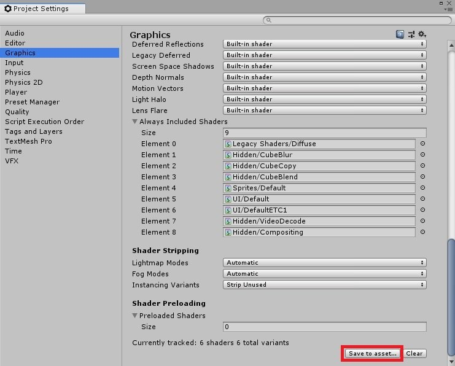
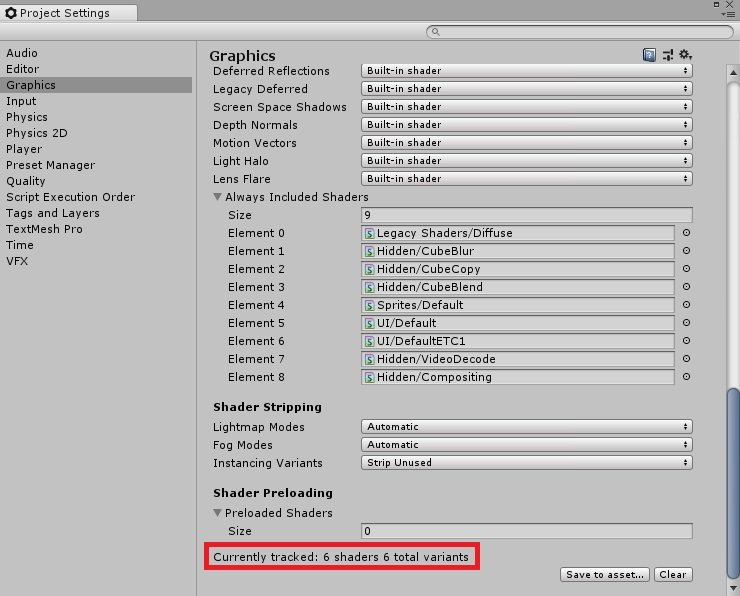
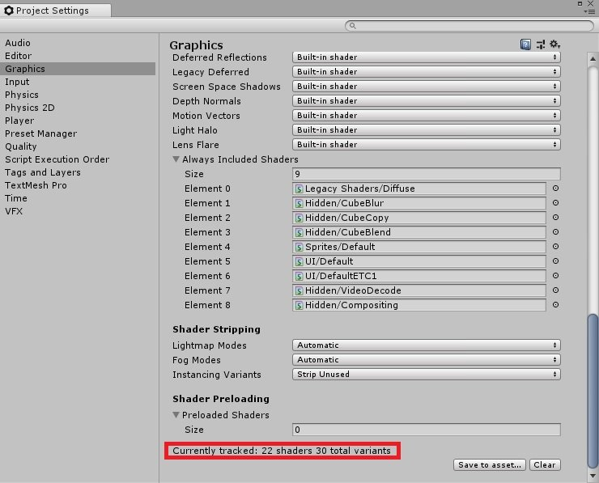
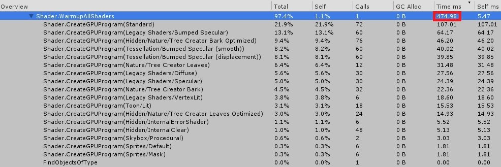
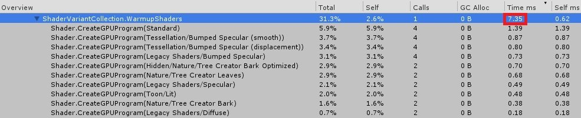

在 Unity 中載入物件時，若載入時物件的 Shader 尚未存在，會針對該 Shader 進行載入的動作，但這樣會導致許多耗時產生
Shader.Parse
Shader.CreateGPUProgram
讓原本載入物件的耗時又更加嚴重
與其他讀取優化相同，這時就會想到先預載這些 Shader 就能解決 Shader 載入時的耗時
由官方說明 OptimizingShaderLoadTime 可以得知
由於 Shader 會產生許多 Shader Variant，進而造成三個潛在問題
1. 建置時間變長、包體變大
2. 讀取時間變長、記憶體占用變大
3. 專案中 Shader 的使用情況
建置時間變長、包體變大
此問題可以在先前的文章中查看Scriptable Shader Variant Stripping：Reduce 80% Build Time – 可編程著色器變體剔除：減少 80% 建置時間
讀取時間變長、記憶體占用變大
實測 Shader.WarmupAllShaders 可以發現，在使用的當下會產生相當大的 CPU Peak，為了改善 WarmupAllShaders 的讀取時間，Unity 提供了 ShaderVariantCollection 來解決此問題。如何建立並使用 ShaderVariantCollection.WarmUp 優化 Shader.WarmupAllShaders 就是這篇文章要說明的重點
專案中 Shader 的使用情況
Shader.WarmupAllShaders 會一次性的預載專案中的所有 Shader，所以使用者必須自行過濾專案打包後要包含的所有 Shader，在過濾上會多花費不少時間。
而 ShaderVariantCollection 可以透過 Unity 的內鍵工具來進行生成，利用優化後的建立流程能夠提升 Shader 的使用情況，並自動化的進行創建。
ShaderVariantCollection 顧名思義就是一個 Shader Variant 列表
要建立 ShaderVariantCollection 相當容易，只要透過 Project Settings 中的內建工具即可快速建立
Editor/Project Settings/Graphics/Shader Loading/Save to asset…

使用 Project Settings 中的內建工具建立 ShaderVariantCollection 後會發現一個缺點，在專案開啟時並不會包含任何的 Shader Variant，而是要實際的執行遊戲，讓 Shader Variant 確實的被讀取，此時 Shader Loading 中才會包含正確的 Shader Variant，因此可以針對此缺點優化 ShaderVariantCollection 建立流程。

優化思路如下
1. 建立新場景
2. 建立 Quad 用於顯示
3. 取得專案中所有材質 GUID
string[] materialAssetPaths = AssetDatabase.FindAssets("t:material");4. 將取得的材質依序指派給 Quad
5. 等待畫面繪製
6. 重複步驟 4 直到所有材質遍歷完畢
Material material = null;
for (int i = 0; i < materialAssetPaths.Length; i++)
{
material = AssetDatabase.LoadAssetAtPath<Material>(AssetDatabase.GUIDToAssetPath(materialAssetPaths[i]));
referenceRenderer.sharedMaterial = material;
yield return null;
}7. 使用反射將結果儲存
string assetPath = string.Format(ShaderVariantCollectionUtils.ASSET_PATH, ShaderVariantCollectionUtils.SHADER_VARIANT_COLLECTION_NAME);
if (AssetDatabase.LoadAssetAtPath(assetPath, typeof(ShaderVariantCollection)) == null)
{
AssetDatabase.CreateAsset(new ShaderVariantCollection(), assetPath);
}
BindingFlags bindingFlag = BindingFlags.Static | BindingFlags.NonPublic;
MethodInfo saveCurrentShaderVariantCollectionMethodInfo = typeof(ShaderUtil).GetMethod("SaveCurrentShaderVariantCollection", bindingFlag, null, new System.Type[] { typeof(string) }, null);
if (null != saveCurrentShaderVariantCollectionMethodInfo)
{
saveCurrentShaderVariantCollectionMethodInfo.Invoke(null, new object[] { assetPath });
}8. 儲存成功

進入遊戲後載入 ProjectShaderVariantCollection.shadervariants
並執行 ProjectShaderVariantCollection.WarmUp 即可
Shader.WarmupAllShaders()

ShaderVariantCollection.WarmUp()
